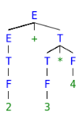

Background : Parser uses a CFG(Context-free-Grammer) to validate the input string and produce output for next phase of the compiler. Output could be either a parse tree or abstract syntax tree. Now to interleave semantic analysis with syntax analysis phase of the compiler, we use Syntax Directed Translation.
Definition
Syntax Directed Translation are augmented rules to the grammar that facilitate semantic analysis. SDT involves passing information bottom-up and/or top-down the parse tree in form of attributes attached to the nodes. Syntax directed translation rules use 1) lexical values of nodes, 2) constants & 3) attributes associated to the non-terminals in their definitions.
Example
E -> E+T | T T -> T*F | F F -> INTLIT
This is a grammar to syntactically validate an expression having additions and multiplications in it. Now, to carry out semantic analysis we will augment SDT rules to this grammar, in order to pass some information up the parse tree and check for semantic errors, if any. In this example we will focus on evaluation of the given expression, as we don’t have any semantic assertions to check in this very basic example.
E -> E+T { E.val = E.val + T.val } PR#1
E -> T { E.val = T.val } PR#2
T -> T*F { T.val = T.val * F.val } PR#3
T -> F { T.val = F.val } PR#4
F -> INTLIT { F.val = INTLIT.lexval } PR#5
For understanding translation rules further, we take the first SDT augmented to [ E -> E+T ] production rule. The translation rule in consideration has val as attribute for both the non-terminals – E & T. Right hand side of the translation rule corresponds to attribute values of right side nodes of the production rule and vice-versa. Generalizing, SDT are augmented rules to a CFG that associate 1) set of attributes to every node of the grammar and 2) set of translation rules to every production rule using attributes, constants and lexical values.
Let’s take a string to see how semantic analysis happens – S = 2+3*4. Parse tree corresponding to S would be

To evaluate translation rules, we can employ one depth first search traversal on the parse tree. This is possible only because SDT rules don’t impose any specific order on evaluation until children attributes are computed before parents for a grammar having all synthesized attributes. Otherwise, we would have to figure out the best suited plan to traverse through the parse tree and evaluate all the attributes in one or more traversals. For better understanding, we will move bottom up in left to right fashion for computing translation rules of our example.

Above diagram shows how semantic analysis could happen. The flow of information happens bottom-up and all the children attributes are computed before parents, as discussed above. Right hand side nodes are sometimes annotated with subscript 1 to distinguish between children and parent.
Additional Information
Synthesized Attributes are such attributes that depend only on the attribute values of children nodes.
Thus [ E -> E+T { E.val = E.val + T.val } ] has a synthesized attribute val corresponding to node E. If all the semantic attributes in an augmented grammar are synthesized, one depth first search traversal in any order is sufficient for semantic analysis phase.
Inherited Attributes are such attributes that depend on parent and/or siblings attributes.
Thus [ Ep -> E+T { Ep.val = E.val + T.val, T.val = Ep.val } ], where E & Ep are same production symbols annotated to differentiate between parent and child, has an inherited attribute val corresponding to node T.
Reference:
http://www.personal.kent.edu/~rmuhamma/Compilers/MyCompiler/syntaxDirectTrans.htm
http://pages.cs.wisc.edu/~fischer/cs536.s06/course.hold/html/NOTES/4.SYNTAX-DIRECTED-TRANSLATION.html